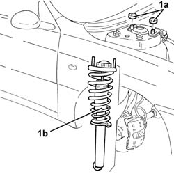

4410A10 L/H OR R/H FRONT SUSPENSION SPRING/DAMPER UNIT (ONE) - R+R - CHECK WHEEL GEOMETRY SEPARATELY IF NECESSARY
- Path
- Procedures > 44 SUSPENSION AND WHEELS > 4410 FRONT SUSPENSION > 4410A FRONT DAMPERS AND SPRINGS > 4410A10 L/H OR R/H FRONT SUSPENSION SPRING/DAMPER UNIT (ONE) - R+R - CHECK WHEEL GEOMETRY SEPARATELY IF NECESSARY
- Kind
- repair procedure (removal / refitting; the operation number is the code)
- Applies to
- all engines; all production periods
- Interactive page
- https://sloeber94.github.io/elrnDB-aGt/en/#/125001429
Applies to: all engines; all production periods
 Removing
Removing
 Refitting
RefittingPosition the vehicle on the ramp
Proceed with removal
Op. 4450B10 TYRE INFLATION VALVE CAP - REPLACE
Proceed with removal
1. Undo the nuts (1a) and remove the spring/shock absorber assembly for the front suspension (1b).
Op. 4410A80 DAMPER LOWER FORK - R R

Applies to: all engines; all production periods
Refitting
RemovingReplace the spring/shock absorber assembly for the front suspension back in its housing and fix it tightening the nuts to the recommended torque.
 | Fastening | Component | Ø | Value (daNm) |
|---|---|---|---|---|
- | Nut | FRONT DAMPER | M12 | (Bodyshell side) 4.2 ÷ 5.2 |
Proceed with refitting
Op. 4410A80 DAMPER LOWER FORK - R R.
Proceed with refitting
Op. 4450B10 TYRE INFLATION VALVE CAP - REPLACE.
Remove the car from the ramps.
It is advisable to check the wheel alignment
Topics linked from this page (3)
- 4410A80 DAMPER LOWER FORK - R R
- 4450A10 FRONT WHEEL GEOMETRY - CHECK USING OPTICAL EQUIPMENT - INCLUDES FRONT WHEEL TOW-IN ADJUSTMENT IF NECESSARY
- 4450B10 TYRE INFLATION VALVE CAP - REPLACE
Topics that link to this page (3)
- 4410A12 FRONT SUSPENSION DAMPER (ONE), LH OR RH - FOR MCPHERSON STRUT SYSTEM - INCLUDES DISMANTLING/RE-BUILDING OF ASSEMBLY AT BENCH R R
- 4410A16 FRONT SUSPENSION SPRING/DAMPER ASSEMBLIES - R R AND CHECK WHEEL ALIGNMENT SEPARATELY IF NECESSARY
- 4410B68 LOWER SWINGING ARM(ONE), LH OR RH OF FRONT SUSPENSION - R R -CHECK WHEEL ALIGNMENT SEPARATELY